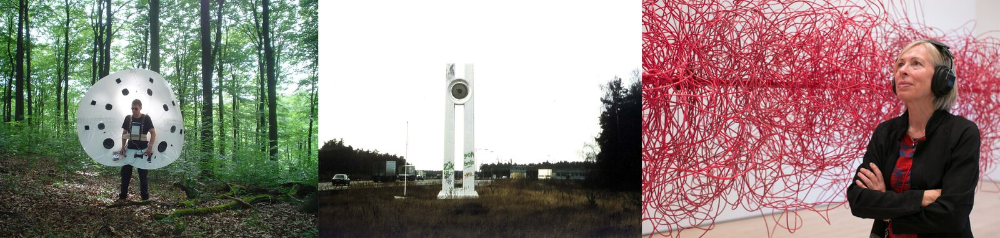
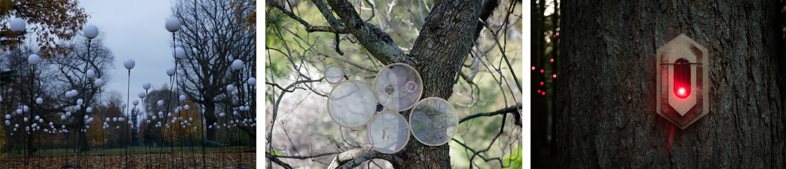
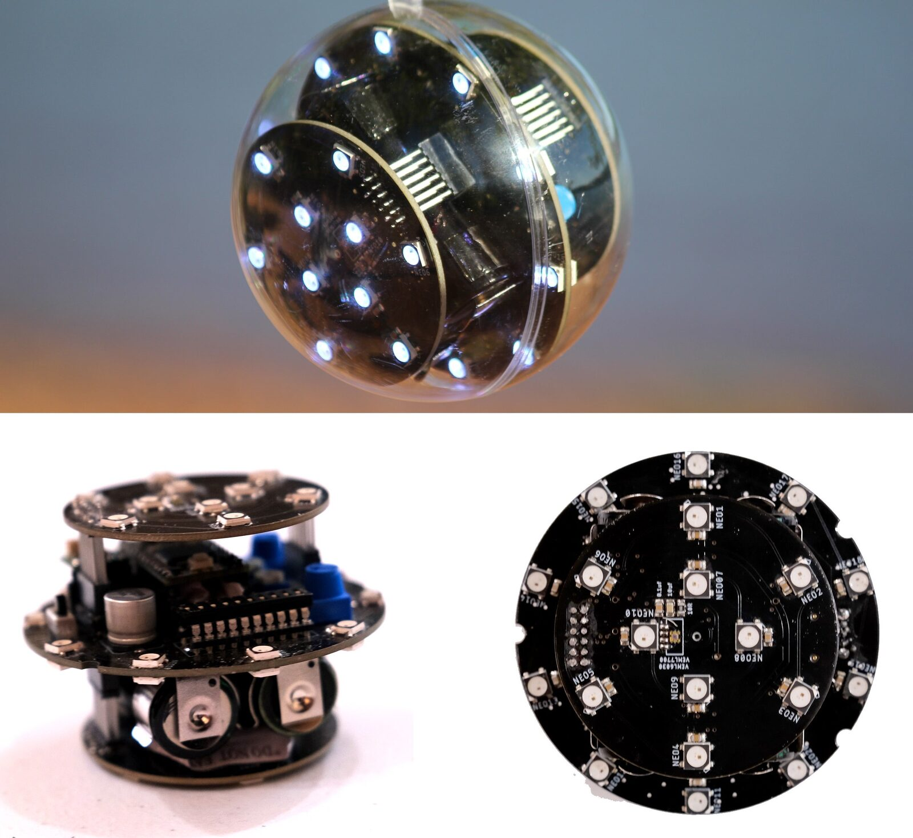
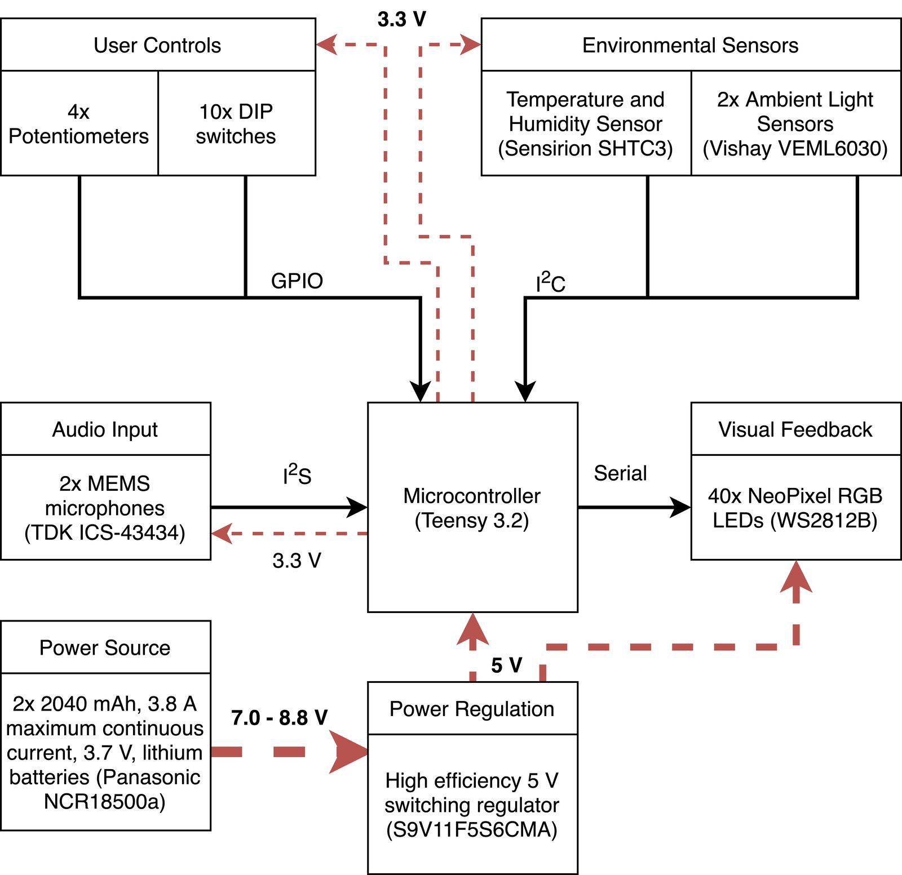
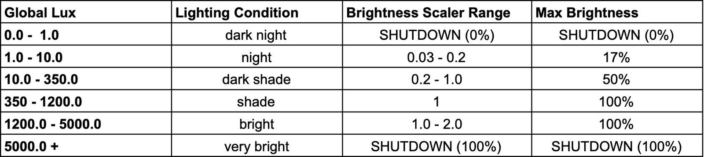
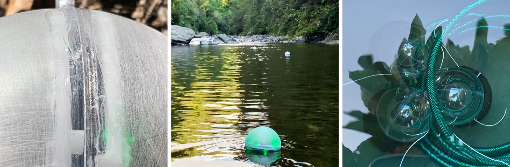
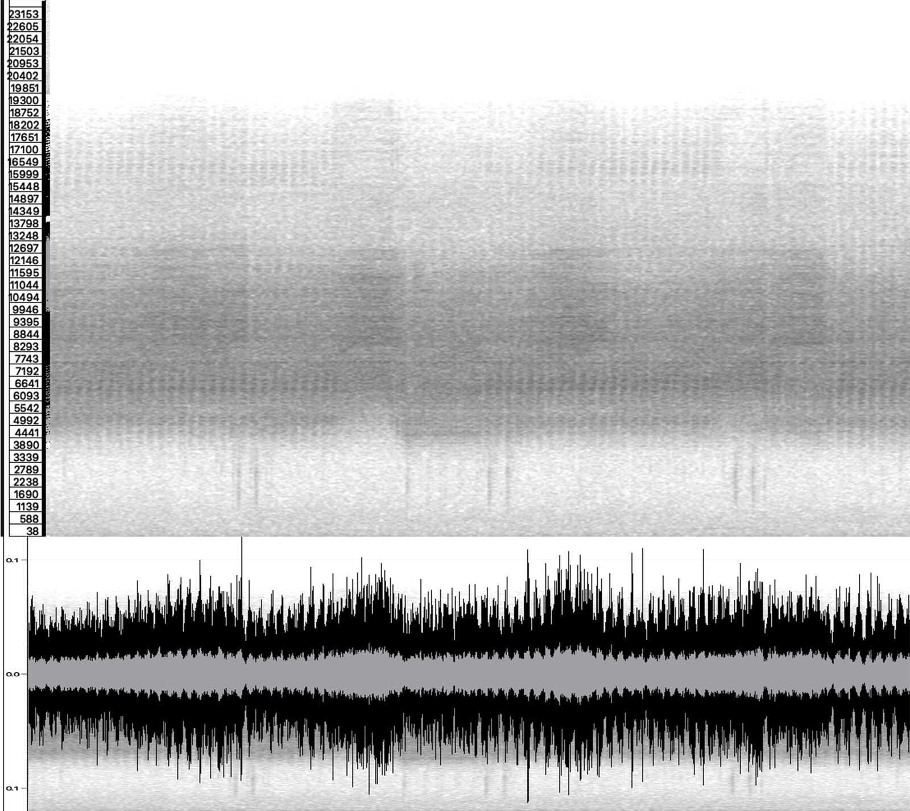
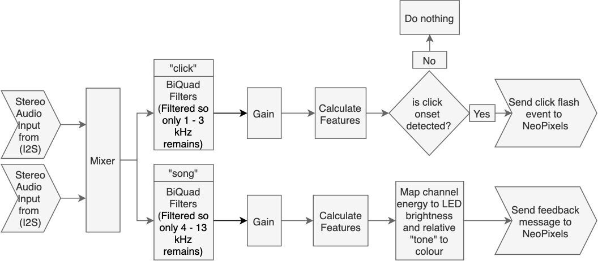
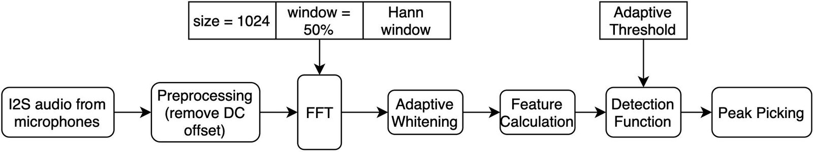
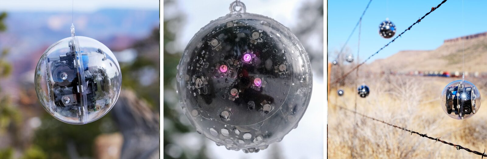

Speculātor: visual soundscape augmentation of natural environments
Abstract
Speculātor is presented as a fist-sized, battery-powered, environmentally aware, soundscape augmentation artifact that listens to the sonic environment and provides real-time illuminated visual feedback in reaction to what it hears. The visual soundscape augmentations these units offer allow for creating sonic art installations whose artistic subject is the unaltered in-situ sonic environment. Speculātor is designed to be quickly installed in exposed outdoor environments without power infrastructure to allow maximum flexibility when selecting exhibition locations. Data from light, temperature, and humidity sensors guide behavior to maximize soundscape augmentation effectiveness and protect artifacts from operating under dangerous environmental conditions. To highlight the music-like qualities of cicada vocalizations, installations conducted between October 2019 and March 2020, where multiple Speculātor units are installed in outdoor natural locations are presented as an initial case study.
Author Keywords
soundscape, soundscape augmentation, sonic art installation, soundscape-specific, mapping, visual augmentation, visualization, natural soundscape, natural sounds
CCS Concepts
Information systems → Music retrieval;
Human-centered computing → Visualization;
Hardware → Printed circuit boards → PCB design and layout;
Introduction
In the second half of the 20th century a new format for multi-sensory artistic expression emerged through integrating auditory elements within visual art practices. These sonic art installations by definition, incorporate acoustic elements into their overall presentation and the realization of the work's artistic statement. As these installations physically exist in space at a specific location, their venue's visual qualities, and everything contained within, are incorporated into the overall perception of the work. This physicality combined with the cross-modality of our senses means that sonic artworks are unavoidably audio-visual experiences.
Another component of sonic arts that is of importance to later sections is the tradition of exhibition outside of typical art gallery venues. Practicing in a tradition which Alan Light describes in Sound Art Revisited (2019) as an artform which developed as an "environmental artform" sound artists have always embraced the use of both man-made and natural sounds as well as the in-situ soundscapes which these sounds generate in urban, rural, and natural settings.
While the aural content of sound art installations is usually provided, created, or catalyzed by the artist, sometimes the in-situ sonic environment provides the installation's exclusive sonic content. Within these works, in-situ sounds are highlighted, emphasized, or amplified by the artist's actions or use of technology. As sonically augmenting the soundscape can risk distracting from the sounds already present in the environment, this approach shows potential when the in-situ soundscape is desired to serve as the installation's artistic subject.
The Speculātor project proposed in this paper explores the artistic implications of augmenting soundscapes without adding sounds or manipulating how visitors physically hear those sounds in-situ. In this manner, Speculātor can be considered to spiritually follow in the footsteps of early sonic artworks such as Max Nauhaus' Listen: Field Trips Through Found Sound Environments (1966), and John Cage's 4'33" (1952), which also present the in-situ sonic environment as the sonic and artistic focus through the use of visual cues which guide audience members to that focus. The next section will expand upon the ideas introduced in this section through examples of previous works from which the Speculātor project has built upon.
Background and Related Works
This section aims to contextualize the use of illuminated soundscape augmentations to facilitate sonic installation art, beginning with a subsection clarifying this paper’s use of the terms "soundscape" and "soundscape augmentation". To provide precedent for the use of technology within in-situ natural environments, we discuss two approaches to how music technology can be used within sonic artworks. After distinguishing between the interactivity between music technology and natural soundscapes, examples of illuminated visual feedback within outdoor artworks are provided. Although these examples are not audio-reactive, they provide precedent for the use of distributed identical multiples within an installation location and LED lighting within outdoor installation artworks. This section concludes with an overview of a few examples of visual soundscape augmentation while noting that this topic serves as a potential gap within the larger discourse of natural soundscape augmentation techniques.
Soundscapes and Soundscape Augmentation
Starting in the early 20th century, the term "soundscape" came into use to describe the combination of all the sounds present at any location. In 1977, R. Murray Schafer, in his influential book The Soundscape: Our Sonic Environment and the Tuning of the World, proposed the definition of "soundscape" to be expanded to include the psychological element of how humans perceive and mentally process the sonic environment. Alternatively, the term "sonic environment" should be used to describe the combination of all sounds present at any location regardless of how they are physiologically and psychologically perceived [1]. The importance of this definition for our discussion is that it implies the augmentation of soundscapes can occur aurally through the addition of sounds or through non-aural methods that guide or manipulate visitors’ physiological perception of the sonic environment. For our purposes, "natural soundscape" is used to refer to soundscapes that are dominated by biophony (biological sounds) and geophony (geophysical sounds) while exhibiting minimal anthrophony (human-produced sounds). The term "natural sound" is used in this paper to reference both biophonetic and geophonetic sounds [2], while "soundscape augmentation" describes the intentional addition of perceivable information related to the soundscape which manipulates or guides its perception [1].
Natural Soundscapes and Music Technology


Examples of purpose-built devices for interacting with natural soundscapes in-situ. From left to right: Peacock in the Forest (2005) by Benoît Maubrey, Speaker’s Monument (1991) by Benoît Maubrey, and Christina Kubisch participating in a 2009 Electrical Walk.
One can argue there are two different approaches to how music technology interacts with natural soundscapes. One method is to bring natural sounds into the digital domain removed from the environment where they originated. Projects which have leveraged this approach include SWAF (2011), which aids in the documentation and musical repurposing of in-situ soundscapes through web-based interfaces, and Locustream Open Microphone Project (2005), which live-streams soundscapes from locations around the globe [3]. We Are All Pests (2012) by Brittany Ransom physically transports components of a larger natural soundscape into the gallery while Dawn Chorus (2007) by Marcus Coates uses human voices to recreate bird vocalizations recorded from nature.
With the second approach, music technology is introduced into natural soundscapes to facilitate in-situ sonic art and musical performances. The range of technology employed in this effort has included consumer-available devices such as field-recorders, midi controllers, smartphones, and loudspeakers [4][5][6][7]. Some works have designed and constructed purpose-built devices (see Figure 1) as seen with the speaker adorned outfits of Benoît Maubrey including Audio Clothes (1982), Audio Herd (1985), and Video Peacock (2008) — which contrast to methods used in the artist’s interactive outdoor speaker sculptures such as Speaker’s Monument (1991) and PORTE SONORE (SPEAKER'S GATE) (2010).
The Electrical Walks (2004) series of installations by Christina Kubisch represents the application of decades spent perfecting custom electromagnetic sonification headphones. Like the majority of Kubisch’s installations, Electrical Walks allow participants to listen to "sounds" already present in the sonic environment but are normally physiologically imperceivable by the human sensory apparatus. Works that bring technology to the in-situ sonic environment, such as Baubrey and Kubisch, are prioritized throughout the remainder of this document over works that bring natural sounds or soundscapes indoors.
Illuminated Visual Feedback in Outdoor Environments
Installations that leverage LED feedback and also take place outdoors exhibit differing levels of environmental awareness. Pixi (2017) by WERC, activates its visualizations when the presence of visitors is wirelessly detected and is influenced by communications between individual units once active. Twilight States and the Edge of Darkness (2016) alternatively activates its visualizations as the sun begins to set — see Figure 2. Following a similar aesthetic approach to Pixi and Wind in the Trees (deploying a multitude of identical units to a location to create emergent complexity), Murmurtion (2016) by Squidsoup features 720 networked RGB LED feedback devices which are capable of playing sampled audio. Likewise, the installation Bloom (2016) features 1000 "independent audio-visual" pixel devices which produce immersive sonic environments [8][9]. Lily (2018), another installation by the artist collective WERC, features networked units that change the color and brightness of their LED feedback according to their motion (while floating in water) along with the current temperature and wireless interactions between individual units.


Examples of artworks which employ illuminated visual feedback in natural environments. From left to right: Bloom (2016) by Ferguson et al., Twilight States and the Edges of Darkness (2016) by Law and Golda, and Pixi (2017) by the WERC artist collective.
In these examples, the juxtaposition of electronic devices in natural environments is aesthetically and artistically leveraged in a manner that is unobtainable for work presented within indoor gallery walls. As noted by Law and Golda in [10], despite the installation’s LED lighting routines being pre-programmed and deterministic, some viewers became convinced that the "pre-programmed light patterns were intentionally synchronized with the local amphibian symphony" — which shows potential in utilizing LED feedback to provide audio-reactive visual augmentations to highlight animal vocalizations. In most of these examples, the individual augmentation artifacts are networked together so they can synchronize their visual output to provide a singular cohesive visual experience. While this represents one possible approach, a decentralized approach to feedback, as seen in Twilight States and the Edges of Darkness for instance, can provide independent perspectives on the environment in a manner that a singular centralized system is incapable of.
Visual Soundscape Augmentations
There have been many studies conducted on the effect visual stimulus has on aural perception. While originally this research has focused on speech recognition, it has since branched out to include topics such as music appreciation. In 2009, Boltz et al. conducted a study on the impact visual stimulation has on music perception and memory to find "the mere presence of visual information, regardless of its affect or format, enhanced certain musical dimensions such that melodies were heard as faster, more rhythmic, louder, and more active than the melodies heard by themselves" [11]. Several years later, Platz and Kopiez collected the results from 15 studies on the audio-visual perception of music which partially concluded "that the visual component is not a marginal phenomenon in music perception, but an important factor in the communication of meaning" [12]. Collectively the findings from similar research suggest that visual stimulation can profoundly affect listeners’ aural attention and perception of the sounds they hear.
Since the beginning of sound art as a practice, sonic artworks have leveraged the inherent intertwining of our visual and aural senses’ as can be seen with Neuhaus’ Listen: Field Trips Through Found Sound Environments (1966). The work began by stamping participants’ hands with the word "LISTEN" before leading them through outdoor environments where the in-situ soundscape was treated as a sound installation. The visual reminder to "LISTEN" that Neuhaus provides can be considered a way to augment the psychological components of participants’ soundscape perception [13].
Using a modern evolution of Neuhaus’s stamp, many artists create mobile phone soundwalks that provide visual guides, maps, and textual prompts as part of the user’s multimodal walking experience. By providing supplemental information about the sounds they are hearing, artists are able to guide the participant’s perception of the sounds they hear to provide listening experiences which are difficult to facilitate without the visual augmentations. In this manner, many mobile phone soundwalking methedologies can be considered to visually augment the participants perception of the sonic environment [14].
Speculātor — Visual Soundscape Augmentation Artifact
Speculātor is a small, battery-powered, environmentally reactive soundscape augmentation artifact that provides audio-reactive LED feedback. To survive in outdoor, fully-exposed locations, Speculātor uses data collected from a combined temperature and humidity sensor to shutdown the system when the enclosure is too hot inside or compromised by liquid ingress. Lux readings collected from ambient light sensors are leveraged to maximize the artifact’s visual feedback effectiveness by dynamically scaling feedback brightness according to the lighting conditions.


Close up of Speculātor v3 unit with an unsanded and unsealed enclosure (top). Speculātor hardware from the side (bottom left) and top (bottom right).
Within installations, small groups of Speculātors are distributed throughout a natural environment, either hung from environmental features such as tree branches or placed resting on the ground. After situating themselves within the new habitat, the units activate their LEDs and begin to provide real-time feedback according to their individual interpretations of the sonic environment. For reference, a YouTube playlist containing video documentation of Speculātor installations conducted from late 2019 through early 2021 is available at [15].
Design Considerations
To develop devices that can be exhibited in a broad range of outdoor locations, the following design considerations were considered:
Transportability
light-weight, small size, packable, quick to install and uninstall
Modularity
modular hardware to allow for damaged components to be replaced instead of entire units
modular firmware to allow for quicker installation development times
Environmental Awareness
to protect from damaging operating conditions
to guide behavior
Environmental Resistance
Self-Power
Usability
on-board user controls
autocalibration when possible
Visual Aesthetics
can be leveraged to reinforce artistic and sonic goals
Hardware Overview
Initial proof-of-concept prototypes ran ChucK code on a Raspberry Pi Zero to rapidly iterate over audio system configurations before migrating to C++/C running on a Teensy 3.2 for increased real-time performance. The Speculātor implements a stacked PCB design consisting of three layers — where two identical breakout boards sandwich a mainboard. This multi-layered approach is a compact and portable design solution. The mainboard contains the Teensy microcontroller, the voltage regulator, the temperature and humidity sensor, and twenty feedback LEDs with ten on each PCB side. To allow facilitators to adjust runtime and boot settings to accommodate the sonic environment without modifying code, the mainboard contains four thumb-potentiometers and a 10-pole DIP switch array mapped to the most commonly used parameters.


Speculātor hardware components. Dotted lines distinguish power distribution while solid lines correspond to data flow between components.
ower is supplied by two lithium-ion batteries that are connected in series and regulated using a high-efficiency switching regulator. The regulator’s 5 V output powers the Teensy microcontroller and NeoPixel LEDs, while the 3.3 V provided by the Teensy is used to power the microphones, environmental sensors, and user controls. Each of the two identical breakout boards connect to the mainboard using board-to-board connectors, contain one MEMS microphone, one ambient light sensor, and ten feedback LEDs.
The microphones communicate with the Teensy using an I2S audio bus, while the temperature, humidity, and light sensors utilize I2C. The Teensy calculates audio features from the audio stream and references the current environmental conditions to determine the brightness and color of its forty individually addressable RGB LEDs. For reference, Figure 4 provides a graphical overview of the Speculātor hardware systems.
Temperature and Humidity Sensing
When electronic devices are installed in exposed outdoor environments, there is the possibility of dangerously hot or wet operating conditions occurring during runtime. The Speculātor's combined temperature and humidity sensor is positioned below the micro-controller in the mainboard's center to protect it from direct sunlight. The sensor is polled several times a minute. It permanently shuts down the hardware if a relative humidity level of over 95% is detected, which given the inclusion of small desiccant packs in the airtight enclosure, generally indicates liquid ingress. If a temperature threshold of 60° C is breached, the system enters into a temporary shutdown until the temperature drops below 48° C, after which normal operation resumes.
Ambient Light Sensing


Sample mapping between ambient lux levels and visual feedback brightness.
To help provide perceptually consistent feedback and maximize energy efficiency, lux readings collected from ambient light sensors are used to adjust LED feedback brightness according to the mapping strategy seen in Figure 5. The sensors are configured to utilize the shortest available integration time to avoid a feedback loop between the LED feedback system and the lux sensors and only collects readings after the LEDs have been off long enough to prevent a feedback-loop effect. Furthermore, the firmware shuts down the LEDs and polls the sensor when more than 60 seconds pass without an automatic polling event.
Electronics Enclosure


From left to right: close up of enclosure seal, three sealed enclosures floating anchored to the river bed, three sealed enclosures approximately 1 meter underwater in controlled "rubbish-bin" experiment. No ingress was experienced in the controlled tests with minimal, non-damaging liquid ingress occurring when Speculātors are installed underwater in a river or floating in high-current locations.
The Speculātor enclosure is made from acrylic and consists of two halves that snap together to form a transparent sphere. Small loops on the top of each half allow for a fishing line to be attached so artifacts can be hung from features in the environment. Depending on the installation’s artistic and aesthetic needs, the orbs can be buffed with sandpaper for a diffused translucent finish, which distributes the LED light onto the enclosure instead of projecting it outwards. While most similar LED artworks, including Murmurtion and Lily mentioned in the background section, utilize a frosted enclosure, the transparent finish allows the electronics to be fully visible for aesthetic reasons. When units are expected to be directly exposed to water, a small amount of silicone sealant can optionally be applied to the enclosures to provide additional ingress protection — see Figure 6.
Cicada Installations — Initial Case Study
For the initial case study, the system’s ability to selectively react to targeted sounds in the environment is investigated. Amphisalta zealandica (common name chorus cicada) dominates the summer soundscape within New Zealand’s Wellington region and is the first target test case. The impressive loudness of these insect’s vocalizations, their prevalence during the summer months, their production of both percussive clicks and continuous drones, combined with a perceived under-appreciation of the intricate music-like qualities present in brood vocalizations, provided a perfect opportunity to test the Speculātor artifacts in-situ.
Pop-Up Exhibit Methedology

Speculātor units installed clockwise from top left: Kaitoke Regional Park in February 2020; Kaitoke Regional Park in March 2020, close-up of a frosted unit displaying song feedback, close up of same frosted unit displaying click feedback.
The general location where any given cicada installation occurs, the specific locations where Speculātor units are placed within the exhibit area, as well as the install, exhibit, and uninstall logistics are approached with a "pop-up" installation methodology. This methodology has been developed to conduct in-situ soundscape augmentation installations and can be thought of as generating "soundscape-specific" artworks. For these installations, the predetermined physical installation location is malleable as each installation’s final location is determined on the day of install according to the location’s sonic qualities. In the cicada installations, the target soundscape is dominated by the sounds of the chorus cicada broods. During an installation, the units share the same listening goals but develop different interpretations of the soundscape based on their perspectives.
Targeted Vocalizations


Spectrogram and corresponding waveform of A. zealandica vocalizations. Both the spectrogram and waveform were created using the Sonic Visualiser using a linear 2048 bin window and a dBV2 scale where darker regions correspond to higher energy from a one-minute recording captured on February 7th, 2020 in New Zealand.
The chorus cicada produces two sounds which the installations target. The first is a high-pitched "song" vocalization, seen in Figure 8, which occurs regularly within broods and sonically dominates the sonic environment between 4000 — 13000 Hz. The second targeted sound is a broad-spectrum clicking, which results from cicada forcefully slamming their wings against the surfaces they are attached to and is most apparent between 1 — 3 kHz [16]. To supplement this paper’s discussions, a video showing a chorus cicada engaged in singing and clicking can be viewed at [17].
To generate feedback that corresponds to both the cicada click and cicada song, the mixed microphone input signal is split into two channels, which are processed independently to best target either the song or click component of cicada vocalizations — as seen in Figure 9. To maximize feedback responsiveness while making it easier for Speculātors to be dropped into soundscapes that exhibit different amplitudes and frequency contents, the audio features go through an automated scaling process.


Audio system flowchart for providing visual feedback for cicada song and click events.
When a new minimum value for a feature is calculated the program decreases its currently recorded minimum value by five percent of the difference between the new and old value. The minimum value furthermore undergoes an automatic decay process which increases its value by ten percent of the difference between the minimum and maximum value every few minutes. This process is inverted for the maximum values recorded so that new maximum values proportionally increase the currently recorded maximum and the decay process decreases the threshold automatically.
The firmware uses the maximum and minimum recorded values to scale to incoming feature to a value between 0.0 and 1.0 where 0.0 is the lowest recorded value and 1.0 is the highest. This automatic relative scaling and threshold decay algorithm is inspired by the signal-processing technique of adaptive whitening and allows the firmware to more easily adapt to differing soundscapes without manual intervention [18].
Song Detection and Feedback
The brightness of song feedback is determined by the amount of relative energy contained within the target frequency range of 4 — 13 kHz compared to the sum of the 120 — 4000 and 13000 — 20000 Hz ranges. The spectral centroid audio feature is mapped to feedback color, so lower centroid values produce green and higher centroid values produce red colors — with yellow and orange shades occurring when moderate centroid readings are recorded. The centroid feature is calculated using only the FFT bins containing frequencies between 4 — 13 kHz to minimize interference from other sonic sources such as bird calls or cicada clicks. Furthermore, the novelty function’s result is offset by the energy recorded below 3 kHz and above 14 kHz to help the system distinguish from broadband noise generated from motor vehicles, wind, water, and other irrelevant sonic sources.
Click Detection and Feedback


The onset detection operating logic utilized within the Speculātor firmware.
While the cicada song augmentations are continuously updating, the click augmentations are intermittently providing a perfect use-case for real-time onset detection. While there is a wide range of computational approaches to detecting the onset of sonic events [19], the onset detection configuration utilized for Speculātor employs the workflow seen in Figure 10. To partly mitigate the likelihood of non-click sonic events causing false positives, the time-domain preprocessing stage involves filtering the raw audio stream using biquad filters until only frequencies between 1000 — 3000 Hz remain. The novelty function result is compared to a threshold set using one of the onboard potentiometers or computationally adjusted according to the installation’s requirements. Once a click is detected, Speculātor flashes all LEDs a purple-white color at maximum brightness. Through a process of trial and error, it was found that 40 ms served as a period that is long enough to be seen, but quick enough to allow for other click onsets that might occur in immediate secession to remain distinguishable from the initial onset.
Evaluation
From October 2019 to March 2020, Speculātor was utilized in over twenty ad-hoc, pop-up installations within New Zealand’s Wellington region. Previous hardware and firmware revisions used a naive technique that filtered away frequencies not present in cicada vocalizations and relied on hard-coded thresholds to trigger feedback events. While these units performed well in soundscapes which were nearly identical in amplitude and spectral content to the recordings used to calibrate the firmware, they performed poorly within initial installations where units often utilized little of their dynamic range, appeared unresponsive, and suffered from false positives and negatives. This problem revealed the need for the system to respond to a broader range of sonic environments.
To allow critical settings to be quickly adjusted during the installation process, user controls were added to the hardware design and to provide consistent feedback from installation to installation, auto-calibration and auto-thresholding were added to the firmware. Shortcomings were also identified with the hardware design including transportability, visibility, and non-optimal sensor placement. These problems were individually addressed through the hardware presented in this document by decreasing the overall unit size and weight, increasing the number of LED feedback elements, evenly distributing LEDs over the entire device, adding two break-out boards to ensure optimal sensor placement, and including a combined temperature and humidity sensor. These modifications greatly improved the feedback quality provided by units when targeting cicada vocalizations, improved the reliability of the feedback provided, and allowed for a wider range of installation configurations.
Due to unforeseen circumstances resulting from the outbreak of COVID-19, the primary author was forced to unexpectedly locate back to his home country in March 2020. As the chorus cicada is not present within California, the Speculātor project has pursued artistic goals which are more closely related to American soundscapes. The purpose of the new research focus is to further expand the adaptability of Speculātor by creating a general-purpose listening mode that can react to any soundscape in a meaningful way regardless of its sonic content.
Conclusions
This paper presented Speculātor as a battery-powered, electronic device that utilizes microphones and environmental sensors to produce real-time soundscape augmentations through an array of RGB LEDs. Critical components of Speculātor’s hardware and firmware systems were presented along with an initial case study in visual soundscape augmentation where Speculātor units target the vocalizations of A. zealandica. Through its hardware and firmware systems, Speculātor explored non-aural approaches to the exhibition of sonic artwork which leveraged visitors’ visual sense to prioritize listening. By focusing on listening instead of speaking, visual soundscape augmentation techniques potentially serve as a promising method for realizing sonic installation art whose artistic focus is the in-situ sonic environment.
Future Work


Speculātor’s installed from left to right: Grand Canyon, Arizona; Donner’s Pass, California; and Route 66, Arizona.
Future work is focused on expanding the application of Speculātor within new sonic environments which is currently manifesting through a "general purpose" operating mode that dynamically adapts to any soundscape. With this new computational approach, automated amplification, filtering, feature selection, and thresholding are utilized to enable units to provide feedback based on what individual units identify as salient. Photographic documentation collected from a group of initial test installations utilizing this new approach can be seen in Figure 11.
Compliance with Ethical Standards
The work contained in this article was jointly funded by the Victoria University of Wellington and the first author.
Citations
- ↩Schafer, R. M. (2011). The Soundscape: Our Sonic Environment and the Tuning of the World. Rochester, Vt.: Destiny Books.
- ↩Pijanowski, B. C., Villanueva-Rivera, L. J., Dumyahn, S. L., Farina, A., Krause, B. L., Napoletano, B. M., … Pieretti, N. (2011). Soundscape ecology: the science of sound in the landscape. BioScience, 61(3), 203–216.
- ↩Sinclair, P. (2018). Locus Stream Open Microphone Project. In 2018 ICMC Preserve|Engage|Advance (pp. 271–275). Daegu, South Korea.
- ↩Kobayashi, A., Anzai, R., & Tokui, N. (2020). ExSampling: a system for the real-time ensemble performance of field-recorded environmental sounds. New Interfaces for Musical Expression, 305–308.
- ↩Shaw, T., & Bowers, J. (2020). Ambulation: Exploring Listening Technologies for an Extended Sound Walking Practice. New Interfaces for Musical Expression, 23–28.
- ↩Van Renterghem, T., Vanhecke, K., Filipan, K., Sun, K., De Pessemier, T., De Coensel, B., … Botteldooren, D. (2020). Interactive soundscape augmentation by natural sounds in a noise polluted urban park. Landscape and Urban Planning, 194.
- ↩Monastero, B., McGookin, D., & Torre, G. (2016). Wandertroper: supporting aesthetic engagement with everyday surroundings through soundscape augmentation. In Proceedings of the 15th international conference on mobile and ubiquitous multimedia (pp. 129–140).
- ↩Ferguson, S., Rowe, A., Bown, O., Birtles, L., & Bennewith, C. (2017). Sound design for a system of 1000 distributed independent audio-visual devices. New Interfaces for Musical Expression 2017, 245–250.
- ↩Bown, O., Rowe, A., & Birtles, L. (2020). Creative audio design for a massively multipoint sound and light system. International Symposium on Electronic Art, 77–82.
- ↩Law, J., & Golda, A. (2020). Enchanting Materialities: e-textiles installations for an ecosophic world. International Symposium on Electronic Art, 260–266.
- ↩Boltz, M. G., Ebendorf, B., & Field, B. (2009). Audiovisual interactions: The impact of visual information on music perception and memory. Music Perception, 27(1), 43–59.
- ↩Platz, F., & Kopiez, R. (2012). When the eye listens: A meta-analysis of how audio-visual presentation enhances the appreciation of music performance. Music Perception: An Interdisciplinary Journal, 30(1), 71–83.
- ↩Drever, J. L. (2009). Soundwalking: aural excursions into the everyday. The Ashgate Research Companion to Experimental Music, 163–192.
- ↩Behrendt, F. (2010). Mobile sound: media art in hybrid spaces. Sussex, England.
- ↩Villicana-Shaw, N. (2020). Speculator Installations and Tests. Retrieved from https://youtube.com/playlist?list=PLRkAJaucPUSaGDdThVVrCOS3wYImiRZzB
- ↩Hill, K. (2012). Chorus cicada, Amphisalta zelandica (Boisduval), males calling with only wing-clicks. The Wētā, 43, 15–20.
- ↩Nathan Villicana-Shaw. (2020). Amphisalta Zealandica (Chorus Cicada) Vocalising on Fence Post. Retrieved from https://youtu.be/yMrm4TT1Hl8
- ↩Stowell, D., & Plumbley, M. (2007). Adaptive whitening for improved real-time audio onset detection. International Computer Music Conference, 312–319.
- ↩Böck, S., Krebs, F., & Schedl, M. (2012). Evaluating the Online Capabilities of Onset Detection Methods. In ISMIR (pp. 49–54).